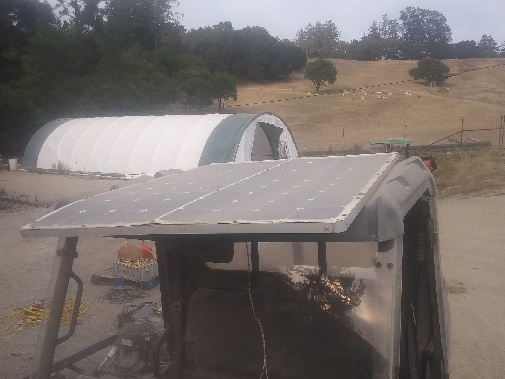
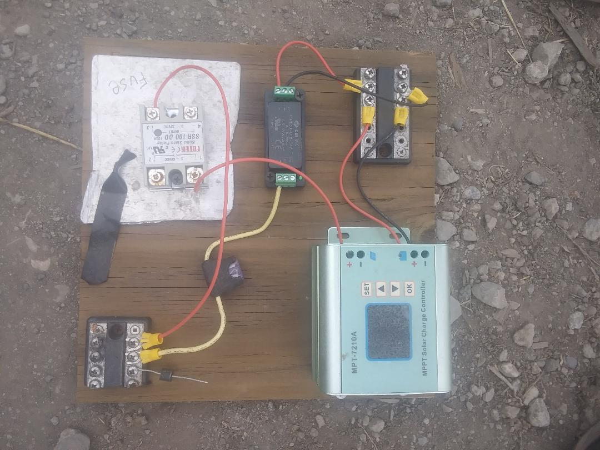
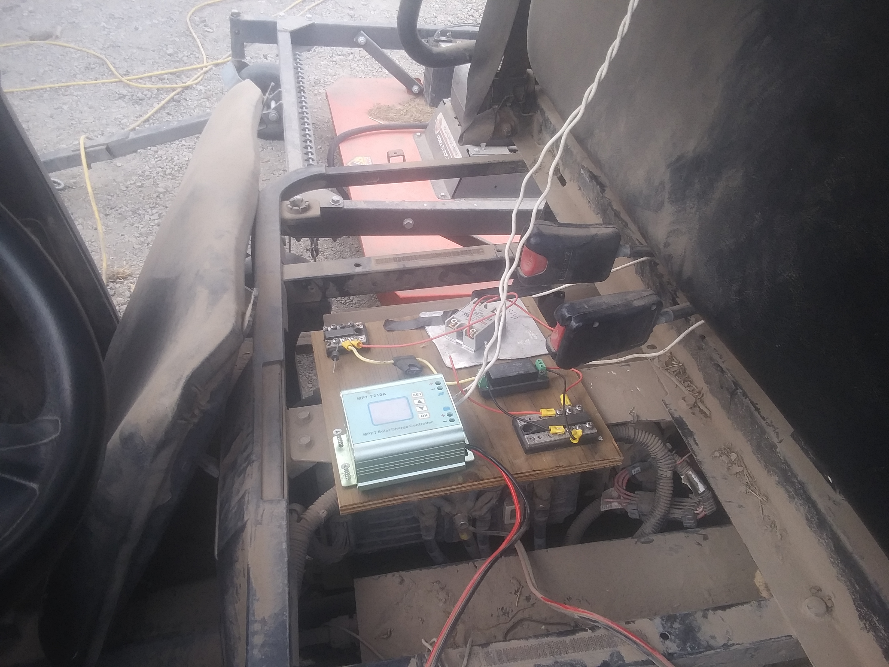

16 Apr 2021
I wanted to passively charge a Polaris Ranger EV from solar panels. Two 100 watt solar panels had been installed on top of the ranger. The ranger originally had lead-acid batteries. Running and charging lead-acid from solar is simple with a solar controller, but the ranger had already been converted to run off of a lithium battery, which meant it had a battery management system (BMS). Powering the BMS was the crux of this problem.
I decided I only wanted to power the BMS when the solar panels were producing power. I was able to achieve this using a combination of the following:

So here we take solar power (two 100 watt panels in series, so 0 - 56 volts), convert it to 24v to power the BMS. Then the BMS is sampling the battery. When the BMS determines the battery should be charged, it toggles an output pin from float to ground. Then I also take 24v to signal to the relay. At this point, when the BMS is powered and pulls the output pin to ground, the relay closes. The relay will open and close the connection from the solar controller to the battery.

This approach worked in simple scenarios such as when the sun was shining or when it wasn’t, but I ran into two coupled issues:

These issues indicated a need for hysteresis in the system. Because the hysteresis had to be low power, I couldn’t use a software solution which would’ve relied on a bare minimum of powering a microcontroller. I found a low powered active circuit solution that relied on a comparator. I used the LM339 and found this calculator useful. I don’t have a good intuition for how a comparator should behave, so I leaned heavy on trial and error with the calculator to find appropriate voltage and resistor values.

Hysteresis diagram

Full circuit diagram with hysteresis circuit
The goal of the comparator / hysteresis circuit is to differentiate ON vs OFF threshold values. In my case, I wanted the BMS to turn on when the solar panel voltage was above 40v and turn off when it was below 10v. This would eliminate the power cycling of the BMS when in partial sun and when the battery was connected to the solar controller / solar panels. I learned two technical lessons through experimentation with the comparator:
The BMS DC converter has an optional enable pin. Adding the hysteresis circuit between the solar panels (comparator signal input) and DC converter (comparator signal output) allowed hysteresis control over the BMS. Now, the power cycle went as follows:

Now, this circuit worked as expected. The new issue was to harden the system to tolerate both vibration and mud, which is a lot less interesting to talk about.
Originally, the ranger used a different solar controller for the lead-acid batteries, but when that didn’t work (3 charging cycles were too reserved for the lithium), I used this
Notes: BMS DC converter needs to be isolated because the auxiliary ground is different from the battery ground
What I learned:
The BMS is the Orion BMS Jr.